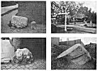
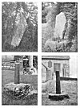

Sacred Texts Legends & Sagas England Index Previous Next
TRADERS' ROADS.
Salt was an early necessity, and "Doomsday Book" records Herefordshire Manors owning salt pans at "Wick," namely Droitwich. The salt ley for Hereford came from Droitwich through the White House, Suckley, Whitwick Manor, Whitestone, Withington (site of present chapel), White House, Tupsley, Hogg's Mount, Hereford,

Click to enlarge
PLATE IX. MARK-STONES.
{kind=link}
|
1. Red Lion, Madley. 2. Credenhill. 3. Wye Street, Hereford. 4. Bartonsham (see Plate VIII.). |

Click to enlarge
PLATE X. TRANSITION OF MARK-STONE TO CROSS.
{kind=link}
|
1. Pedlars Cross, Llanigon. 2. Wergins Stone. 3. Churchyard Cross, Vowchurch (Inset, Hole in Shaft, Bitterley). 4. Churchyard Cross, Capel-y-Fin. |
and on to its terminal on Mynydd Ferddin Hill through Whitfield mansion. Another salt ley passes through Henwick and Rushwick (Worcester), over the Storridge pass through Whitman's Wood, and ultimately gets to White Castle (Mon.), passing over the White Rocks at Garway. Similar leys pass through such places as Saltmarshe Castle, Whitewell House, the two White Crosses, Whitcliffe, Whiteway Head, the Wych pass over the Malverns. It is plain what the "white" man carried.
A knowledge of the ancient pottery in the Kiln Ground Wood at Whitney enables me to show the meaning of the numerous red banks, barns, and houses. A ley through this pottery is sighted on Newchurch Hill and passes through Redborough, Red Lay (a cottage on main road this side of Letton); the ley is then dead on two miles of the present high road as far as the Portway, and passing through the Home Farm, Gamons (where the ancient road exists), it ultimately reaches the little Red House, the old Tannery House at The Friars, Hereford; the ley goes on through Woolhope Church, but the small local potter had come to his limit and the reds cease on this road. Another ley from this pottery runs through the Red Gates and Eardisley Park.
What the "black" man carried is indicated by the name still given to the smith who works in iron. Whoever carried to or from the local forges, whether it was ore, charcoal, or iron, would be black.
The earliest trade (before metals were worked) must have been in flints, and as a man who wanted such would not have gone across Gloucestershire to the nearest chalk districts to fetch them, the flint chippers, or knappers, would come on the road to sell them. The sighting tumps called the Knap are common, and if I wanted to search for flint flakes, I should go to the base of the Knaps, their earliest market. Tin Hill, Tinker's Hill, and Tinker's Cross have a similar meaning.
![g'.г.Ail maiden ©uмонетი: ℞ubli© ძ'ommAin 🖼 ImageI by 'Art'hur R_AckHÅm' & All inclusive names to my Roots && me, me I.B.M.l. ასლაჼ კლდიაშვილი, А©ЛАჼ ©КЛიДиÅWвიЛи [1922], @novadays ი.ბ. АйбоЛит [Aibolem МЕЛОДИЯR₾ი მო'სი'კვÅჼ]](https://barionleg.github.io/db-sacred-texts.li/neu/ba_geo_f.png) |